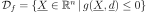
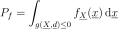
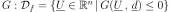

Analytical¶
-
class
Analytical(*args)¶ Base class to evaluate the probability of failure of a system.
- Available constructors:
- Analytical(nearestPointAlgorithm, event, physicalStartingPoint)
Parameters: nearestPointAlgorithm :
OptimizationAlgorithmOptimization algorithm used to research the design point.
event :
EventFailure event.
physicalStartingPoint : sequence of float
Starting point of the optimization algorithm, declared in the physical space.
See also
FORM,SORM,StrongMaximumTest,Event,StandardEvent,AnalyticalResultNotes
Used in reliability analysis, Analytical is a base class for the approximation methods
FORMandSORMenabling to evaluate the failure probability of a system. A failure event is defined as follows :  where denotes a random input vector representing the sources
of uncertainties,
denotes a random input vector representing the sources
of uncertainties,  is a determinist vector representing the
fixed variables.
is a determinist vector representing the
fixed variables.  is the limit state function of
the model separating the failure domain from the safe domain.
Considering the joint probability density function
of the random variables , the probability of failure of the
event
is the limit state function of
the model separating the failure domain from the safe domain.
Considering the joint probability density function
of the random variables , the probability of failure of the
event  is :
is :
The analytical methods use an isoprobabilistic transformation to move from the physical space to the standard normal space (U-space) where distributions are spherical (invariant by rotation by definition), with zero mean, unit variance and unit correlation matrix. The usual isoprobabilistic transformations are the Generalized Nataf transformation and the Rosenblatt one.
In that new U-space, the event has the new expression defined from the transformed limit state function of the model  and its boundary :
 .
Then, the event probability
.
Then, the event probability  rewrites :
rewrites :where is the density function of the distribution in the standard space.
The analytical methods rely on the assumption that most of the contribution to
comes from points located in the vicinity of a particular point
, the design point, defined in the U-space as the point located
on the limit state surface verifying the event of maximum likelihood. Given the
probabilistic characteristics of the U-space, has a geometrical
interpretation: it is the point located on the event boundary and at minimal
distance from the origin of the U-space. Thus, considering
its coordinates in the U-space, the design point is the result of the
constrained optimization problem :Then the limit state surface is approximated in the standard space by a linear surface (
FORM) or by a quadratic surface (SORM) at the design point in order to evaluate the failure probability. For more information on this evaluation, see the documentation associated with these two methods.The result of the optimization problem is recoverable thanks to the method
getAnalyticalResult().The unicity and the strongness of the design point can be checked thanks to the
Strong Maximum Test.Examples
>>> import openturns as ot >>> myFunction = ot.SymbolicFunction(['E', 'F', 'L', 'I'], ['-F*L^3/(3*E*I)']) >>> myDistribution = ot.Normal([50.0, 1.0, 10.0, 5.0], [1.0]*4, ot.IdentityMatrix(4)) >>> vect = ot.RandomVector(myDistribution) >>> output = ot.RandomVector(myFunction, vect) >>> myEvent = ot.Event(output, ot.Less(), -3.0) >>> # We create an OptimizationAlgorithm algorithm >>> myOptim = ot.AbdoRackwitz() >>> myAlgo = ot.Analytical(myOptim, myEvent, [50.0, 1.0, 10.0, 5.0])
Methods
getAnalyticalResult()Accessor to the result. getClassName()Accessor to the object’s name. getEvent()Accessor to the event of which the probability is calculated. getId()Accessor to the object’s id. getName()Accessor to the object’s name. getNearestPointAlgorithm()Accessor to the optimization algorithm used to find the design point. getPhysicalStartingPoint()Accessor to the starting point of the optimization algorithm. getShadowedId()Accessor to the object’s shadowed id. getVisibility()Accessor to the object’s visibility state. hasName()Test if the object is named. hasVisibleName()Test if the object has a distinguishable name. run()Perform the research of the design point. setEvent(event)Accessor to the event of which the probability is calculated. setName(name)Accessor to the object’s name. setNearestPointAlgorithm(solver)Accessor to the optimization algorithm used to find the design point. setPhysicalStartingPoint(physicalStartingPoint)Accessor to the starting point of the optimization algorithm. setShadowedId(id)Accessor to the object’s shadowed id. setVisibility(visible)Accessor to the object’s visibility state. -
__init__(*args)¶ x.__init__(…) initializes x; see help(type(x)) for signature
-
getAnalyticalResult()¶ Accessor to the result.
Returns: result :
AnalyticalResultResult structure which contains the results of the optimisation problem.
-
getClassName()¶ Accessor to the object’s name.
Returns: class_name : str
The object class name (object.__class__.__name__).
-
getEvent()¶ Accessor to the event of which the probability is calculated.
Returns: event :
EventEvent of which the probability is calculated.
-
getId()¶ Accessor to the object’s id.
Returns: id : int
Internal unique identifier.
-
getName()¶ Accessor to the object’s name.
Returns: name : str
The name of the object.
-
getNearestPointAlgorithm()¶ Accessor to the optimization algorithm used to find the design point.
Returns: algorithm :
OptimizationAlgorithmOptimization algorithm used to research the design point.
-
getPhysicalStartingPoint()¶ Accessor to the starting point of the optimization algorithm.
Returns: point :
PointStarting point of the optimization algorithm, declared in the physical space.
-
getShadowedId()¶ Accessor to the object’s shadowed id.
Returns: id : int
Internal unique identifier.
-
getVisibility()¶ Accessor to the object’s visibility state.
Returns: visible : bool
Visibility flag.
-
hasName()¶ Test if the object is named.
Returns: hasName : bool
True if the name is not empty.
-
hasVisibleName()¶ Test if the object has a distinguishable name.
Returns: hasVisibleName : bool
True if the name is not empty and not the default one.
-
run()¶ Perform the research of the design point.
Notes
Performs the research of the design point and creates a
AnalyticalResult, the structure result which is accessible with the methodgetAnalyticalResult().
-
setEvent(event)¶ Accessor to the event of which the probability is calculated.
Parameters: event :
EventEvent of which the probability is calculated.
-
setName(name)¶ Accessor to the object’s name.
Parameters: name : str
The name of the object.
-
setNearestPointAlgorithm(solver)¶ Accessor to the optimization algorithm used to find the design point.
Parameters: algorithm :
OptimizationAlgorithmOptimization algorithm used to research the design point.
-
setPhysicalStartingPoint(physicalStartingPoint)¶ Accessor to the starting point of the optimization algorithm.
Parameters: point : sequence of float
Starting point of the optimization algorithm, declared in the physical space.
-
setShadowedId(id)¶ Accessor to the object’s shadowed id.
Parameters: id : int
Internal unique identifier.
-
setVisibility(visible)¶ Accessor to the object’s visibility state.
Parameters: visible : bool
Visibility flag.